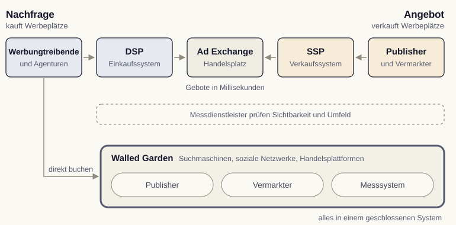
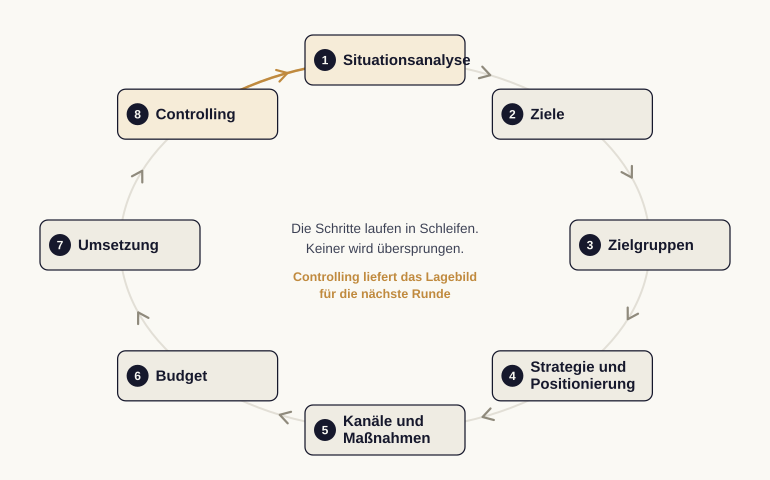

Modul 11: Marktumfeld, Recht und Organisation
Werbungtreibende setzen ein Budget ein. Agenturen liefern Strategie, Kreation, Mediaeinkauf oder Technik. Publisher stellen Werbeplätze bereit. Vermarkter bündeln und verkaufen diese Plätze.
Quelle: Kreutzer & Klose (2025)
Demand-Side-Platform (DSP): das Einkaufssystem der Werbungtreibenden.
Supply-Side-Platform (SSP): das Verkaufssystem der Publisher.
Ad Exchange: der Handelsplatz dazwischen.
Ergänzend prüfen Messdienstleister Sichtbarkeit und Umfeld.
Suchmaschinen, soziale Netzwerke und Handelsplattformen treten gleichzeitig als Publisher, Vermarkter und Messsystem auf. Daten, Auslieferung und Erfolgsmessung liegen in einem geschlossenen System: Walled Gardens.
Quelle: Chaffey & Ellis-Chadwick (2022)

Zahlen aus dem Werbekonto eines Anbieters sind zugleich sein Leistungsnachweis. Der Abgleich mit eigener Webanalyse und Kundendatenbank bleibt deshalb Pflicht.
| Modell | Bezahlt wird für |
|---|---|
| Tausend-Kontakt-Preis (TKP/CPM) | tausend Kontakte oder Einblendungen |
| Cost per Click (CPC) | einen Klick |
| Cost per Action (CPA) | eine Handlung, etwa Kauf oder Anfrage |
| Umsatzbeteiligung (Revenue Share) | einen Anteil am vermittelten Umsatz |
Je näher das Modell an der Handlung liegt, desto mehr Risiko trägt der Vermarkter.
Quelle: Lammenett (2025)
Wer Risiko abgibt, bezahlt es im Preis pro Kontakt mit.
Ein Bekanntheitsziel passt zum Tausend-Kontakt-Preis, ein Abschlussziel zum Cost per Action.
Ein Seitenaufruf meldet den freien Platz an die SSP. Mehrere DSPs geben nach hinterlegten Regeln ein Gebot ab. In wenigen Millisekunden steht das ausgelieferte Werbemittel fest.
Bei Programmatic Guaranteed und Preferred Deals vereinbaren beide Seiten Volumen und Preis vorab; die Technik übernimmt nur die Auslieferung.
Wo versteigert wird, gilt überwiegend das Erstpreisverfahren.
1 Lage Situationsanalyse
2 Ziel Ziele, Zielgruppen, Positionierung
3 Mittel Kanäle, Maßnahmen, Budget
4 Steuerung Umsetzung und Controlling

Häufiger blieben die Ziele unscharf, oder das Controlling setzte erst nach Ende der Laufzeit ein. Die Schritte laufen in Schleifen, aber keiner darf ausfallen.
Impression: eine einzelne Einblendung eines Werbemittels.
Reichweite: erreichte Personen, praktisch gemessen als Unique Users.
Frequenz: durchschnittliche Kontakte je erreichter Person.
Click-Through-Rate (CTR): Anteil der Klicks an den Einblendungen.
TKP oder CPM: Preis für tausend Kontakte beziehungsweise Einblendungen.
CPC: Preis für einen Klick.
CPA: Kosten für eine ausgelöste Handlung.
Return on Ad Spend (ROAS): Umsatz je eingesetztem Euro Werbebudget.
Der Markt ist automatisiert, der Preis folgt dem Ziel, und der Plan trägt die Kampagne. Nächster Schritt im Seminarraum: das achtstufige Raster auf einen eigenen Kampagnenfall anwenden und benennen, an welchem Schritt es zuerst hakt.
Jan Kirenz